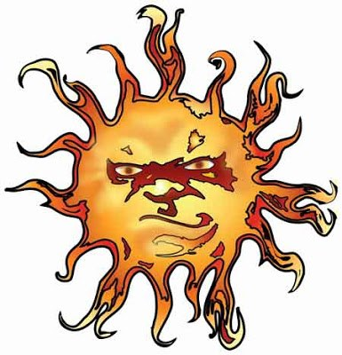
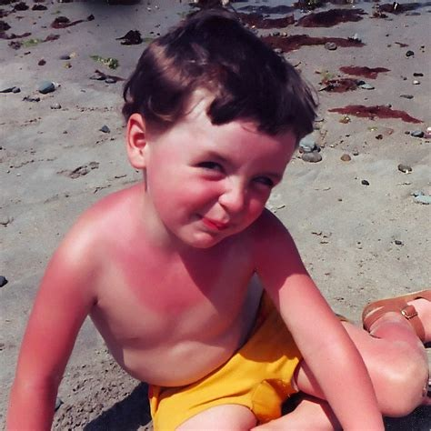

Güneş Çarpması
Güneş Çarpmasını (Sıcak Çarpması) Tanıyalım Önlemimizi Alalım
Kurallarına uygun davranıldığında fayda gördüğünüz, kurallarına uygun davranmadığınızda zarar gördüğümüz durumlar vardır. Güneş ile insanın ilişkisi bunun için iyi örneklerden bir tanesidir.
D vitaminin vücutta üretilmesi için güneş ile temasımız vazgeçilmez bir unsur iken, sıcak günlerde uzun süre güneş altında kalmak güneş (sıcak) çarpmasına neden olabilmektedir.
Vücut ısısının dengede tutulması mekanizması (Termoregülasyon)
- Tüm ısı kontrol mekanizmaları vücut faaliyetlerin bozulmadan devam etmesi için tasarlanmıştır. Bu bir denge mekanizmasıdır.
- Termoregülasyon vücut iç sıcaklığını korumaya sağlayan bir süreçtir.
- Vücut iç sıcaklığı 37-37.8 derece arasında dengede tutulmaktadır
- Dengenin 42 dereceye bozulması beyin hasarı ve ölümle sonuçlanabilmektedir.
- Beynimizin ısı dengesini kontrol eden birimi hipotalamustur, vücut iç sıcak değişimlerinde organlarımız, kaslarımız, bezlerimiz, sinirlerimize sinyaller gönderir ve sinyaller sonucunda vücutta çeşitli fizyolojik yanıtlar oluşur
Güneş Çarpması (Sıcak Çarpması) Nedenleri
Güneş çarpmasının temel nedeni yüksek sıcaklıklara maruz kalmaktır.
- Tatilde uzun süre güneş altında korumasız bir şekilde kalmak
- Uzun süre güneş altında korumasız bir şekilde çalışmak
- Çocukların uzun süre güneş altında korunaksız şekilde kalması
- Güneş altında uzun süre kalıp, yeterli su içilmemesi
- Vücut iç ısısını artıran kalın kıyafetler giyilmesi
- Aşırı gıda tüketimi ve güneş altında uzun süre kalınması
- Ağır egzersizler vücut iç ısısını artırır, güneşin etkisiyle sıcak çarpmasına yatkınlığı artırır.
Güneş Çarpması (Sıcak Çarpması) Kimler Risk Altındadır
- Yaş: 4 yaşın altındaki bebekler ve çocuklar ile 65 yaş ve üstü yetişkinler, ısıya bağlı hastalıklar için yüksek risk altındadır. Bunun nedeni, bu yaşlarda sıcaklığı düzenleme yeteneğinizin daha az olmasıdır.
- Reçeteli ilaçlar: Yüksek tansiyon veya kalp rahatsızlıklarını tedavi etmek için kullanılan bazı ilaçlar (idrar atılımını artıran ilaçlar), susuz kalma yeteneğinizi azaltabilir. Dehidrasyon (sıvı kaybı) ısı bitkinliğine ve sıcak çarpmasına neden olabilir.
- Obezite: Daha fazla tarttığınızda vücudunuz daha fazla ısı tutar. Fazla kilonuz varsa vücudunuzu soğutmak da daha zor olabilir.
- Ani sıcaklık değişiklikleri: Daha sıcak bir yerde tatile gitmek gibi daha soğuk bir iklimden daha sıcak bir iklime hızla geçtiğinizde, vücudunuz daha sıcak havaya uyum sağlayamayabilir. Sonuç olarak vücut ısınızı düzenlemekte daha fazla zorluk çekebilirsiniz.
Güneş Çarpması (Sıcak Çarpması) Belirtiler
En sık görülen yan etkiler baş dönmesi, bulantı, terleyememe, kas krampları şeklindedir.
- Yüksek ateş,
- Kuru – sıcak-ağrılı cilt,
- Şiddetli baş ağrısı,
- Bulantı,
- Kusma ve baş dönmesi,
- Kas krampları,
- Çarpıntı
- Uykuya eğilim,
- Şuur bulanıklığı ve komaya kadar varabilen ciddi klinik tablolar görülebilir.
Güneş Çarpması (Sıcak Çarpması) ve İlkyardım
- Güneş çarpmasına maruz kalan kişi hemen serin olan bir yere alınarak üzerinde sıkı giysiler varsa gevşetilir ve
- Kusma riskine karşı yan yatırılır.
- Vücut ısısını düşürmeye yönelik başına göğsüne ve koltukaltlarına soğuk su ile ıslatılmış bez koyulabilir veya soğutucularla soğutmaya çalışmak gerekir.
- Kan dolaşımını başa doğru yönlendirmek kişinin için ayaklarını yükseltmek, kol ve bacaklara masaj yapmak, duş aldırmak da gerekebilir.
- Kişinin bilinci açıksa sıvı alımının sağlanması,
- Bilinç kapalı ise kesinlikle içmesi için sıvı verilmemesi takip ve tedavi amaçlı en yakın sağlık kuruluşuna ulaştırılması gerekir
Hava Sıcaklığı ve Hissedilen Sıcaklık
Hava sıcaklığı termometrede ölçülen sıcaklık olup kişinin kıyafetleri, havanın nemi, bulunduğu ortamdaki sıcaklık yayan nesneler, kişinin metabolizması ısı üretme-atma özelliği kişinin hissettiği sıcaklığı etkileyebilmektedir.
Güneş Çarpmasından Nasıl Korunmalı?
Güneş ve yüksek sıcaklığın zararlı etkilerinden vücudumuzu korumak için;
- Mecbur kalmadıkça güneşin yoğun olduğu saatlerde dışarıya çıkılmamalı,
- Terletmeyen ince, açık renkli ve bol giysiler tercih edilmeli,
- Mutlaka güneş gözlüğü, şapka ve şemsiye gibi güneş ışığından koruyacak aksesuarlar kullanılmalı,
- Güneşe çıkmadan yarım saat önce güneş koruyucu kremler sürülmeli
- Günde en az 2,5-3 lt sıvı tüketilmeli (ayran soda su vb.)
- Sindirimi kolay hafif yiyecekler tercih edilmeli
- Fırsat buldukça ılık duş alınmalı
- Uzun ve ağır egzersizlerden kaçınılmalıdır.
Çocukların Güneşe Çıkma Saatine Dikkat!
Güneş ışınlarının dik geldiği, dolayısıyla en etkili olduğu 10.00-16.00 saatleri arasında asla güneşe çıkılmamalıdır. Hava bulutlu bile olsa güneş kremi mutlaka sürülmelidir. Güneşin olmaması zarar vermeyeceği anlamına gelmemektedir. Bu nedenle bu saatlere dikkat etmek ve her havada gerekli önlemleri almak önemlidir.
